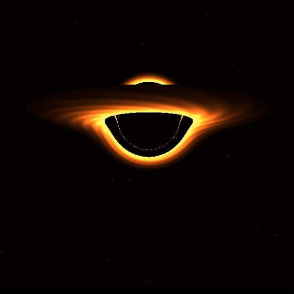
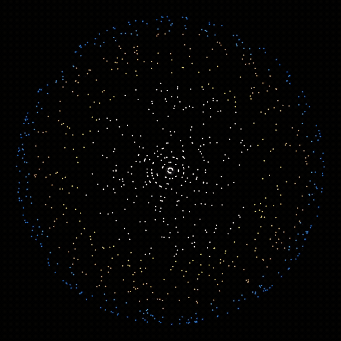
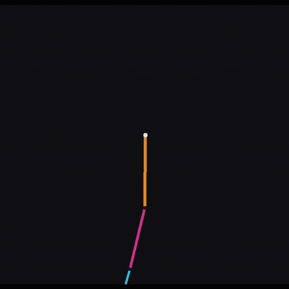
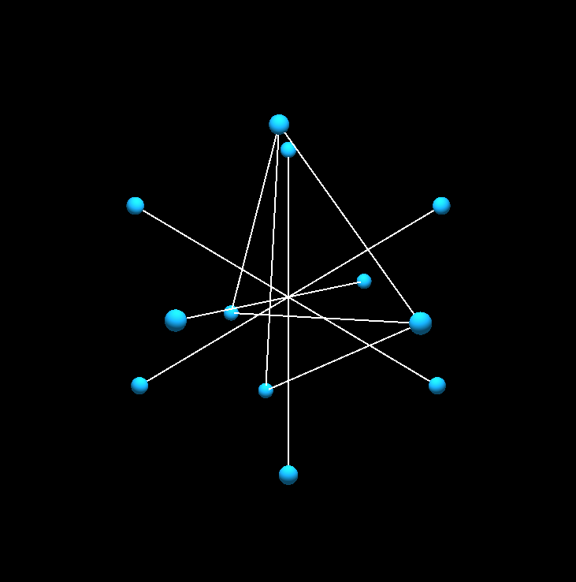

Projects
01. This Portfolio!
You're looking at one. This was put together in raw HTML and CSS, of which I am learning through public forums, random university lectures I find online, and "HTML & CSS: Design and Build Websites" by Jon Duckett
02. Schwarzschild Black Hole 3D Shader
After watching Interstellar for the first time in early 2025, I was, needless to say, inspired to return to this project idea, which, despite exhausting, proved to be very rewarding. Looking at some truly phenomenal projects made in the Taichi Lang library, I decided to hop on the train, creating this GPU-accelerated shader, simulating gravitational lensing and light bending around a black hole.
import taichi as ti
ti.init(arch=ti.gpu)
res = 700
grid_shape = (res, res)
pixels = ti.Vector.field(3, dtype=ti.f32, shape=grid_shape)
@ti.kernel
def render_frame(t: ti.f32):
bh_pos = ti.Vector([0.0, 0.0, 0.0])
bh_mass = 0.15
disk_inner = 0.4
disk_outer = 1.2
for i, j in pixels:
uv_x = (float(i) - res / 2.0) / (res / 2.0)
uv_y = (float(j) - res / 2.0) / (res / 2.0)
ray_pos = ti.Vector([0.0, 0.4 * ti.sin(t * 0.2), -2.2])
ray_dir = ti.Vector([uv_x, uv_y, 1.0]).normalized()
color = ti.Vector([0.0, 0.0, 0.0])
hit_disk = False
step_size = 0.03
for step in range(120):
if hit_disk:
break
diff = bh_pos - ray_pos
dist = diff.norm()
if dist < 0.12:
color = ti.Vector([0.0, 0.0, 0.0])
break
gravity_pull = (bh_mass / (dist * dist * dist)) * diff
ray_dir = (ray_dir + gravity_pull * step_size).normalized()
prev_y = ray_pos.y
ray_pos += ray_dir * step_size
if (prev_y > 0.0 and ray_pos.y <= 0.0) or (prev_y < 0.0 and ray_pos.y >= 0.0):
weight = abs(prev_y) / (abs(prev_y) + abs(ray_pos.y))
intersect_pos = ray_pos - ray_dir * step_size * (1.0 - weight)
disk_plane_pos = ti.Vector([intersect_pos.x, intersect_pos.z])
r_dist = disk_plane_pos.norm()
if disk_inner < r_dist < disk_outer:
hit_disk = True
falloff = (r_dist - disk_inner) / (disk_outer - disk_inner)
intensity = ti.exp(-falloff * 2.5) * (1.0 / (r_dist * r_dist))
angle = ti.atan2(intersect_pos.z, intersect_pos.x)
noise = ti.sin(angle * 12.0 + r_dist * 30.0 - t * 4.0) * 0.15 + 0.85
color = ti.Vector([intensity * 1.0 * noise, intensity * 0.4 * noise, intensity * 0.1])
if not hit_disk and color.norm() == 0.0:
star_noise = ti.sin(ray_dir.x * 400.0) * ti.sin(ray_dir.y * 400.0) * ti.sin(ray_dir.z * 400.0)
if star_noise > 0.992:
color = ti.Vector([0.9, 0.9, 1.0]) * ((star_noise - 0.992) / 0.008)
pixels[i, j] = color
03. Particle Acceleration Towards a Singularity
Here, I simulate particle trajectories and matter getting pulled into a singularity. I hope this is satisfying for you to look at.
import taichi as ti
ti.init(arch=ti.gpu)
N = 1000
res = 800
dt = 0.00015
pos = ti.Vector.field(2, dtype=ti.f32, shape=N)
vel = ti.Vector.field(2, dtype=ti.f32, shape=N)
colors = ti.field(dtype=ti.int32, shape=N)
@ti.kernel
def initialize_space():
for i in range(N):
angle = ti.random() * 2.0 * 3.1415926
radius = 0.2 + ti.random() * 0.35
pos[i] = ti.Vector([0.5 + radius * ti.cos(angle), 0.5 + radius * ti.sin(angle)])
vel[i] = ti.Vector([-ti.sin(angle), ti.cos(angle)]) * 12.0
@ti.kernel
def update_physics():
bh_pos = ti.Vector([0.5, 0.5])
bh_mass = 450.0
event_horizon = 0.015
for i in range(N):
diff = bh_pos - pos[i]
dist = diff.norm()
if dist < event_horizon:
angle = ti.random() * 2.0 * 3.1415926
pos[i] = ti.Vector([0.5 + 0.45 * ti.cos(angle), 0.5 + 0.45 * ti.sin(angle)])
vel[i] = ti.Vector([-ti.sin(angle), ti.cos(angle)]) * 10.0
else:
dir_inward = diff / dist
gravity_pull = (bh_mass / (dist * dist + 0.005)) * dir_inward
dir_spin = ti.Vector([-dir_inward[1], dir_inward[0]])
spin_pull = (bh_mass * 0.4 / dist) * dir_spin
vel[i] += (gravity_pull + spin_pull) * dt
vel[i] *= 0.997
pos[i] += vel[i] * dt
04. Triple Pendulum Simulation
Before I began programming this triple pendulum, I learned Linear Algebra through MIT OCW's course 18.06, Fall 2011, by Professor Gilbert Strang. With great struggle, I tested the waters of Lagrangian Mechanics in course 8.09, Fall 2014, by Professor Iain Stewart. Recruiting my CS brother and more public forums, I am (somehow) able to simulate the behavior of a chaotic triple pendulum after an estimated 21 months of pain.
import taichi as ti
import math
ti.init(arch=ti.gpu)
res_x, res_y = 800, 800
g = 9.81
dt = 0.0015
l1, l2, l3 = 0.15, 0.13, 0.11
m1, m2, m3 = 1.0, 1.0, 1.0
theta = ti.field(dtype=ti.f32, shape=3)
omega = ti.field(dtype=ti.f32, shape=3)
@ti.kernel
def step_physics():
t1, t2, t3 = theta[0], theta[1], theta[2]
w1, w2, w3 = omega[0], omega[1], omega[2]
M11 = (m1 + m2 + m3) * l1
M12 = (m2 + m3) * l2 * ti.cos(t1 - t2)
M13 = m3 * l3 * ti.cos(t1 - t3)
RHS1 = -(m2 + m3) * l2 * w2**2 * ti.sin(t1 - t2) - m3 * l3 * w3**2 * ti.sin(t1 - t3) - (m1 + m2 + m3) * g * ti.sin(t1)
M21 = (m2 + m3) * l1 * ti.cos(t1 - t2)
M22 = (m2 + m3) * l2
M23 = m3 * l3 * ti.cos(t2 - t3)
RHS2 = (m2 + m3) * l1 * w1**2 * ti.sin(t1 - t2) - m3 * l3 * w3**2 * ti.sin(t2 - t3) - (m2 + m3) * g * ti.sin(t2)
det = M11*(M22*M33 - M23*M32) - M12*(M21*M33 - M23*M31) + M13*(M21*M32 - M22*M31)
det1 = RHS1*(M22*M33 - M23*M32) - M12*(RHS2*M33 - M23*RHS3) + M13*(RHS2*M32 - M22*RHS3)
alpha1 = det1 / det
omega[0] += alpha1 * dt
theta[0] += omega[0] * dt
05. Tensegrity Simulation (WIP)
Intrigued by NASA's "SuperBall" project made in 2014, I am attempting to utilize my hardware and software capabilities to learn ML/RL. While my physical hardware progress has plateaued (because I made the very curious decision of purchasing cheap, weak gear motors), I am working to simulate this tensegrity structure in Taichi and to set up my preliminary Pytorch code, of which I hope to successfully use for ML/RL/sim-2-real.
import taichi as ti
ti.init(arch=ti.gpu)
n_nodes = 12
n_springs = 30
pos = ti.Vector.field(3, dtype=float, shape=n_nodes)
vel = ti.Vector.field(3, dtype=float, shape=n_nodes)
force = ti.Vector.field(3, dtype=float, shape=n_nodes)
spring_a = ti.field(dtype=int, shape=n_springs)
spring_b = ti.field(dtype=int, shape=n_springs)
rest_length = ti.field(dtype=float, shape=n_springs)
is_rigid = ti.field(dtype=int, shape=n_springs)
stiffness = ti.field(dtype=float, shape=float, shape=n_springs)
control_factor = ti.field(dtype=float, shape=())
@ti.kernel
def substep():
for i in range(n_nodes):
force[i] = [0.0, -9.8 * 0.002, 0.0]
for i in range(n_springs):
a = spring_a[i]
b = spring_b[i]
x_ab = pos[b] - pos[a]
current_length = x_ab.norm()
if current_length > 1e-5:
dir_ab = x_ab / current_length
if is_rigid[i] == 1:
error = current_length - rest_length[i]
correction = dir_ab * error * 3000.0
force[a] += correction
force[b] -= correction
else:
target_len = rest_length[i]
if i < 12:
target_len *= control_factor[None]
delta_l = current_length - target_len
f_vec = (stiffness[i] * delta_l) * dir_ab
force[a] += f_vec
force[b] -= f_vec
06. Coffee & Cram (WIP)
In collaboration with a close friend, we are working to develop a study website targeted towards helping our community and beyond. We hope to cover a broad range of honors/AP courses, including (though not limited to) AP Biology, Calculus, Physics (1, 2, C), United States History, and more.